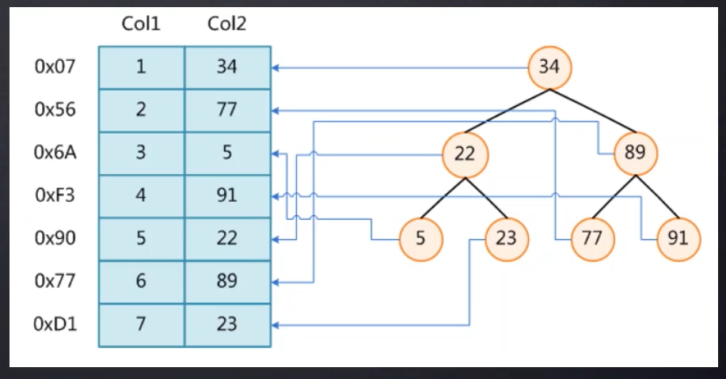
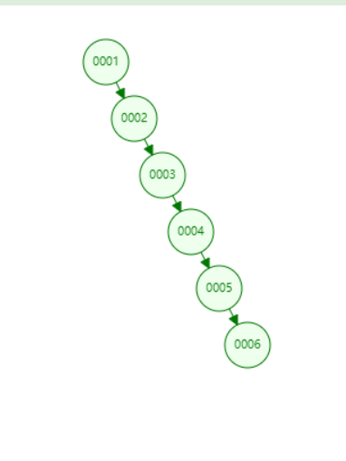
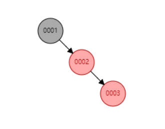
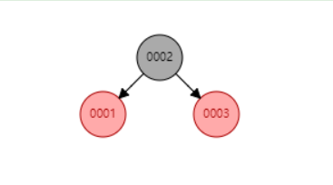
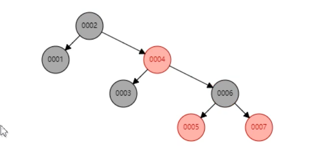
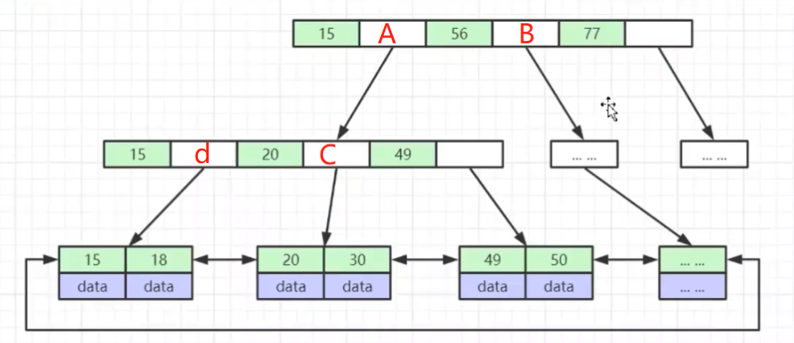
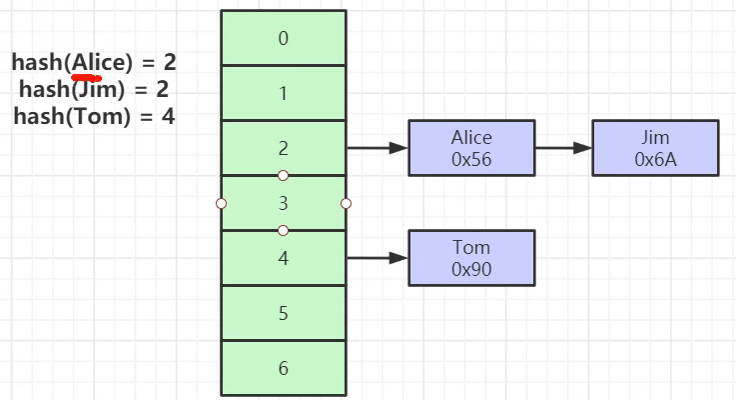
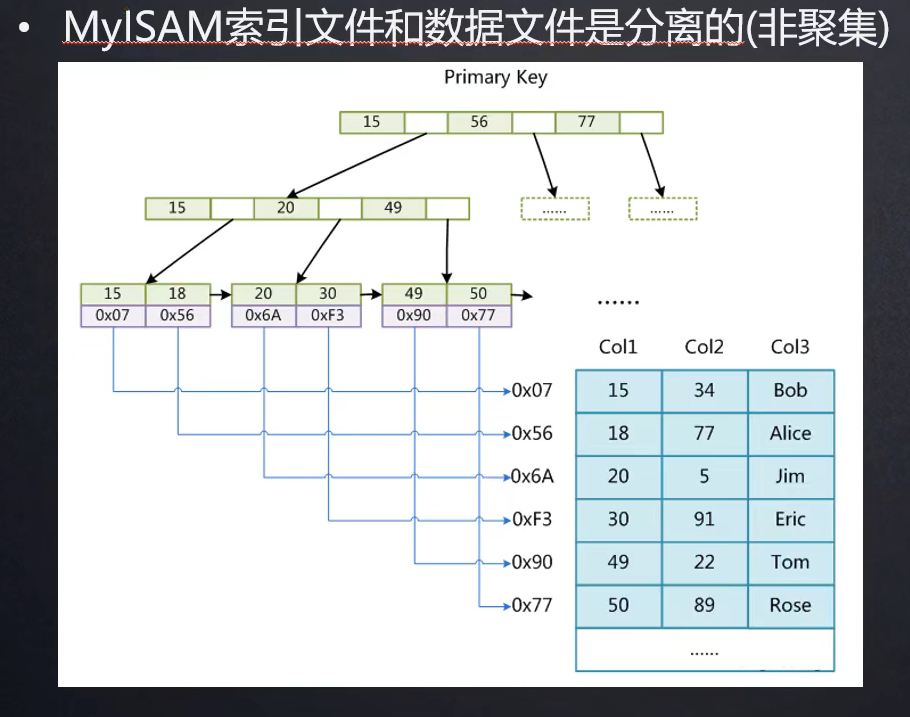
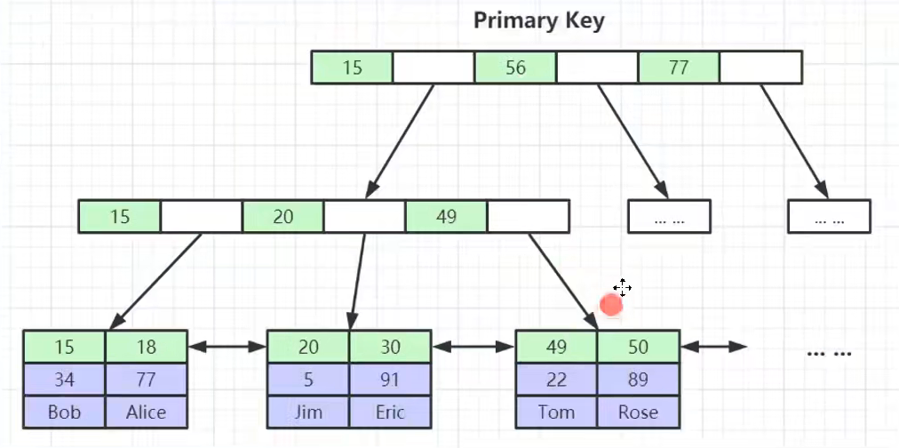
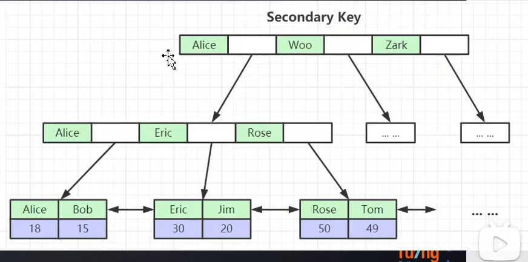

Mysql
Mysql
索引的本质
索引是帮助MySQL高效获取数据的排好序的数据结构
索引数据结构
- 二叉树
- 红黑树
- Hash表
- B-Tree


如果没有索引我们查一条数据比如：
1 | |
因为没有索引所以他要做一个全表扫面，一行一行的找，MySQL的数据是存在磁盘里的，这时候就会有大量的磁盘IO。
二叉树
MySQL早期索引的数据结构是一个二叉树。以K-V键值对的形式进行存储。k是我们的索引字段，v是k所在的磁盘地址。


缺点： 比如col1,这一列是递增上去的，我们给他建立索引的话是单边递增的，如果我们要查col1==6的，仍然要去查找六次，也相当于是做了一个全表扫描。
RED/BLACK TREE
红黑树又称二叉平衡树，当树的一边比另一边高的很多的时候，它可以自动平衡从而避免像二叉树这种情况。


比如这种情况，一遍比另外一边高出很多这时候红黑二叉树会自动做一个转换。转换成下面这个样子。


当使用红黑二叉树来查找col1=6的时候只需要查找三次。


这相对于二叉树就减少了三次的查询。
这样看着比二叉树好了蛮多，但是最终MySQL还是没有采用这种数据结构，因为随着数据量的不断增加，红黑二叉树的高度也会不断增加，我们查的数据可能有一部分是在叶子节点上，这样我们就要从根节点遍历到叶子节点，这样他的磁盘IO次数也会增加，导致效率较低。
如果想让高度可控，只有在横向进行扩展
B-TREE
- 叶节点具有相同的深度，叶节点的指针为空
- 所有索引元素 不重复
- 节点中的数据索引从左到右递增排列
B+树

B+TREE非叶子节点不会存储数据，存的是下指向下一个 节点的指针，也可以说是下一个节点的磁盘地址，在叶子节点才会存储数据在磁盘中的地址。比如我们查找一个数据18，18在1556之间，那么就会找到A，A中存储了下面一个节点的磁盘地址，然后在下面的这个节点中继续查找，18在1520之间，然后根据d存储的下一节点的磁盘地址知道叶子节点，在叶子节点里面找到了18，然后18这个节点存储的是这个18所在的磁盘地址，这时候就可根据这个地址在磁盘中定位到数据了。
我么可以看到B+TREE的一个节点可以有多个索引，通过横向扩展的方式降低了这棵树的高度，就是因为他的一个节点可以有多个索引，这也有了 最左匹配原则，因为我们构建树的时候只能根据一个节点来构建，但是一个节点有多个索引，所以统一规定使用最左边的索引来构建这个树。
hash结构
- 对索引的key进行一次hash运算就可以定位出数据存储的位置
- 很多时候hash索引要比B+树索引更高效
- 仅能满足 “=” “in”,不支持范围查询 因为经过hash运算后之前的范围不一定等于之后的范围，你如之前的范围是[10,25],经过hash运算后就不一定是这个范围了。B+TREE叶子节点相当于是一个循环列表，叶子节点之间通过指针互联，而且索引字段还是排好序的，所以可以支持范围查找
- hash冲突问题


MyISM存储引擎索引实现


索引文件和数据文件是非聚集的。
存储引擎是应用在表上面的，也就是说他是表级别的。
myism存储引擎存储时有两种文件：frm、myd
- frm: 存储表结构
- myd: 存储表数据
Innodb存储引擎索引实现
聚集索引
- 表数据文件本身就是按照B+TREE组织的一个索引结构文件
- 聚集索引叶子节点包含了完整的数据记录
- 为什么建议InnoDB表必须建主键，并且推荐使用整形的自增组件
- 为什么非主键索引结构叶子节点存储的是主键值（一致性和节省存储空间）


叶子节点放的是索引所在行的其他列数据。叶子节点有去哪表的所有索引，对应的就是全表的所有数据。
普通索引


叶子节点存储的不是索引所在行的其他列，而是主键索引。根据主键在去主键索引里查找数据。（因为主键索引存储的是主键所在行的其他列的值）
聚集索引和非聚集索引的区别
像myism存储引擎他的索引跟数据是分开存储的这种叫做非聚集索引，innodb的主键索引这种是索引跟数据存储在一起叫做聚集索引。
为什么建议InnoDB建立主键索引
首先呢，InnoDB这张表本身就是按照B+TREE这种结构来存储的，如果用的是主键索引通过主键索引到叶子节点找到的就是这条记录完整的记录了，如果没用主键索引，还要根据根据索引找到的叶子节点存储的还是主键索引，还要再找一次。
InnoDB存储数据时是按照B+TREE来存储的，所以他要有一个节点来构建这个属性结构。如果我们又没建立，那么MySQL会自动给我们维护一个隐藏列，而且会保证这个隐藏列的唯一性。然后根据这个隐藏的唯一列帮我们组织这个树。
为什么建议使用整形自增的做主键呢
在寻找叶子节点的过程中需要进行不断的比较，那么是整形比较的快呢，还是uuid这种比较的快呢，显然是整形这种啦。
为什么建议自增呢？我们说过索引的本质是为了帮助MySQL高效获取数据的排好序的数据结构，使用自增可以提高排序效率。很少会造成节点的分裂，节点的分裂是比较耗费性能的 提高全表扫描能力，顺序访问。
索引的本质
索引是帮助MySQL高效获取数据的 排好序的数据结构
本博客所有文章除特别声明外，均采用 CC BY-SA 4.0 协议 ，转载请注明出处！